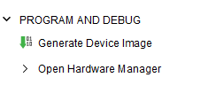
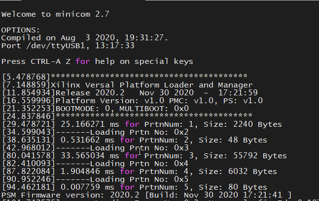

System Design Example for High-Speed Debug Port with SmartLynq+ Module¶
Introduction¶
This chapter demonstrates how to build a Versal™-based system that utilizes both the SmartLynq+ module and the High-Speed Debug Port (HSDP). You will also learn to set up the SmartLynq+ module and download a Linux image using either JTAG or the HSDP.
Important: This tutorial requires a SmartLynq+ module, a VCK190 or VMK180 evaluation board, and a Linux host machine.
Design Example: Enabling the HSDP¶
To enable the HSDP, start with the VCK190 or VMK180 project that you built in the preceding chapter and modify the project to include HSDP support. It is also possible to start this chapter standalone by sourcing the included block design Tcl to create the HSDP capable design. See ref_files/Prod_Si/smartlynq_plus/bd_tcl.
Modifying the Design to Enable the HSDP¶
This design uses the project built in System Design Example using Scalar Engine and Adaptable Engine and enables the HSDP interface. You can do this using the Vivado™ IP integrator.
Open the Vivado project you created in System Design Example using Scalar Engine and Adaptable Engine.
C:/edt/edt_versal/edt_versal.xprIn the Flow Navigator, under IP Integrator, click Open Block Design.

Double-click the Versal ACAP CIPS IP core to recustomize the IP. Click the Next button and click on the blue box labeled PS PMC to customize the Processing System (PS) and the Platform Management Controller (PMC). On the left pane, select click Debug then click on the HSDP tab.

Under High-Speed Debug Port (HSDP), select AURORA as the Pathway to/from Debug Packet Controller (DPC).

Set the following options:
GT Selection to HSDP1 GT
GT Refclk Selection to REFCLK1
GT Refclk Freq (MHz) to 156.25
Note: Line rate is fixed at 10.0 Gb/s.
Click OK to save the changes. Two ports,
gt_refclk1andHSDP1_GT, are created on the CIPS IP.On the IP Integrator page, right-click
gt_refclk1and select Make External. Do the same for HSDP1_GT.
Click Validate Design, then Save.
Synthesizing, Implementing, and Generating the Device Image¶
In the Flow Navigator, under Programming and Debug, click Generate Device Image to launch implementation.
When the device image generation completes, the Device Image Generation Completed dialog box opens.

Exporting Hardware (XSA)¶
Select File → Export → Export Hardware from the Vivado toolbar. The Export Hardware dialog box opens.

Choose Fixed, then click Next.
Choose Include Device Image, then click Next.
Provide the name for your exported file (example:
edt_versal_wrapper_with_hsdp). Click Next.Click Finish.
Creating the HSDP-enabled Linux Image Using PetaLinux¶
This example rebuilds the PetaLinux project using the HSDP-enabled XSA that was built in the preceding step. The assumption is that the PetaLinux project has been created as per the instructions in System Design Example using Scalar Engine and Adaptable Engine.
Important: If you are building this tutorial without having created a PetaLinux project in the preceding chapter, follow steps 1 through 12 in the Example Project: Creating Linux Images Using PetaLinux section to create a new PetaLinux project.
This example needs a Linux host machine. Refer to the PetaLinux Tools Documentation Reference Guide (UG1144) for information on dependencies and installation procedure for the PetaLinux tool.
Change to the PetaLinux project directory that was created in Example Project: Creating Linux Images Using PetaLinux using the following command.
$ cd led_exampleCopy the new hardware platform project XSA to the Linux host machine one directory above the PetaLinux build root.
Note: Make sure that you are using the updated the XSA file which you generated in the prior step.
Reconfigure the BSP using the following commands.
$ petalinux-config --get-hw-description=<path till the directory containing the respective xsa file>
Build the Linux images using the following command.
$ petalinux-build
Once the build completes, package the boot images with the following command:
$ petalinux-package --force --boot --atf --u-boot
Note: The packaged Linux boot images are placed in the
<petaLinux-project>/images/Linux/directory in the PetaLinux build root. Make a note of this directory location as it will be used in the following steps. If you intend to use a different machine than the one that was used to build PetaLinux (for example, a Windows Based PC) to download the Linux boot images using SmartLynq+, the contents of this directory should be transferred to that machine before proceeding with this tutorial.
Setting Up the SmartLynq+ Module¶
Once the Linux images have been built and packaged, they can be loaded onto the VCK190 or VMK180 board using either JTAG or HSDP. To set up the SmartLynq+ module for connectivity using HSDP, follow these steps:
Connect the USB-C cable between the VCK190 USB-C connector and the SmartLynq+ module.
Connect the SmartLynq+ to either Ethernet or USB.
Using Ethernet: Connect an Ethernet cable between Ethernet port on the SmartLynq+ and your local area network.
Using USB: Connect the provided USB cable between the USB port on the SmartLynq+ and your PC.
Connect the power adapter to the SmartLynq+ and power on the VCK190/VMK180 board.
Note: Connect the Ethernet cable to the target device before booting the board.
Once the SmartLynq+ finishes booting up, an IP address appears on the screen under either
eth0orusb0. Make note of this IP address as this is the IP address used to connect to the SmartLynq+ in both the Ethernet and USB use case.
Note: If using Ethernet, the SmartLynq+ acquires an IP address from a DHCP server found on the network. If using USB, the USB port has a fixed IP address of
10.0.0.2.Copy the Linux download scripts from the design package
<design-package>/smartlynq_plus/xsdb.
Using the SmartLynq+ as a Serial Terminal¶
The SmartLynq+ can also be used as a serial terminal to remotely view the UART output from the VCK190. This feature is useful when physical access to the remote setup is not available. The SmartLynq+ module has the minicom application pre-installed, which can be used to connect directly to the UART on the VCK190.
Using an SSH client such as
PuTTYon Windows orsshon Unix-based systems, connect using SSH to the IP address shown on the SmartLynq+ display.Username:
xilinxPassword:
xilinx
For example, if your SmartLynq+ displays an IP address
192.168.0.10, you should issue the following command:ssh xilinx@192.168.0.10.By default, the minicom application uses the hardware flow control. To successfully connect to the UART on Xilinx boards, hardware flow control should be disabled as it is not used on the VCK190 UART. To do this, enter the minicom setup mode by issuing
sudo minicom -sand disabling the feature. Alternatively, issue the following command as root to modify the minicom default configuration:echo "pu rtscts No" | sudo tee -a /etc/minicom/minirc.dfl
Finally, to connect to the VCK190/VMK180 serial terminal output do the following:
sudo minicom --device /dev/ttyUSB1
Leave this terminal open and proceed to the next section.

Booting Linux Images over JTAG or HSDP¶
SmartLynq+ can be used to download Linux images directly to the VCK190/VMK180 without using an SD Card. Linux images can be loaded using JTAG or HSDP.
The design package included with this tutorial contains a script that downloads the Linux images created in the prior steps using the SmartLynq+ module. The script can use either JTAG or HSDP.
On the machine with access to the SmartLynq+ module, open the Vivado tcl shell.

Change the working directory to the PetaLinux build root, if working on the machine used to build PetaLinux, or change to the location where the
images/linuxdirectory was transferred to the local machine in the preceding steps.At the Vivado tcl shell, issue the following command to download the images using HSDP:
xsdb linux_download.tcl <smartlynq+ ip> images/linux HSDP
This loads
BOOT.BINusing JTAG, following which an HSDP link is auto-negotiated and the rest of the boot images are loaded using HSDP. This increases the speed substantially compared to JTAG.Note: You can also download Linux images using JTAG by changing the last argument of the script to
FTDI-JTAGas shown:xsdb linux-download <smartlynq+ ip> images/linux FTDI-JTAG. This uses the JTAG to program all of the Linux boot images. Note the difference in download speed when using HSDP.Versal boot messages can be viewed from the VCK190 UART on the terminal opened in the preceding section:

Once Linux has completed booting using either JTAG or HSDP, you will be presented with the following login screen:

Useful Links¶
For more information on using PL hardware debug cores such as the AXIS-ILA, AXIS-VIO, PCIe™ Debugger, and/or DDRMC Calibration Interfaces refer to the UG908: Vivado Design Suite User Guide Programming and Debugging.
For more information on the SmartLynq+ Module, refer to SmartLynq+ Module User Guide.
Summary¶
In this section you have built a design that uses the HSDP, connected the SmartLynq+ module, configured the SmartLynq+ for remote UART access, and used the HSDP to download Linux images onto your board.
© Copyright 2020-2021 Xilinx, Inc.
Licensed under the Apache License, Version 2.0 (the “License”); you may not use this file except in compliance with the License. You may obtain a copy of the License at http://www.apache.org/licenses/LICENSE-2.0.
Unless required by applicable law or agreed to in writing, software distributed under the License is distributed on an “AS IS” BASIS, WITHOUT WARRANTIES OR CONDITIONS OF ANY KIND, either express or implied. See the License for the specific language governing permissions and limitations under the License.